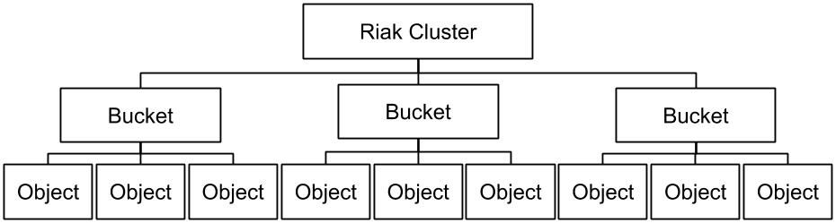

<style>
.markdown-body {
  box-sizing: border-box;
  min-width: 200px;
  max-width: 980px;
margin: 0 auto;
padding: 45px;
}

@media (max-width: 767px) {
  .markdown-body {
padding: 15px;
  }
}
</style>
<article class="markdown-body">
<!DOCTYPE html>
<html>
<head>
  <title>chap6/README.md</title>
  <link rel="stylesheet" href="../.github-markdown-css/github-markdown.css">
</head>
<body>
<h1>
<a id="user-content-chapter-6---riak-the-nosql-database" class="anchor" href="#chapter-6---riak-the-nosql-database" aria-hidden="true"><span aria-hidden="true" class="octicon octicon-link"></span></a>Chapter 6 - RIAK, the NoSQL Database</h1>
<p>In this chapter, we will see how to install <strong><code>Riak</code></strong>, a distributed NoSQL key-value data store, in a Docker.<br>
We will query it via an <strong>Elixir</strong> application through the <strong>Riak's HTTP API</strong>.</p>
<p>The aim is to create a <em>bucket</em> in <strong>Riak</strong>, in which we will store some commands and index them in order to query them later on our front.</p>
<h2>
<a id="user-content-step-0---install-riak-in-a-docker-container" class="anchor" href="#step-0---install-riak-in-a-docker-container" aria-hidden="true"><span aria-hidden="true" class="octicon octicon-link"></span></a>Step 0 - Install Riak in a docker container</h2>
<p>To be able to install <strong>Riak</strong> in a docker container, you need to install the
<code>docker</code> and <code>docker-compose</code> software.</p>
<pre><code>sudo apt-get install docker
sudo apt-get install docker.io
sudo apt-get install docker-compose
</code></pre>
<p>Then you can start your <code>docker</code> container with <strong>Riak</strong> inside by simply running
the following commands in the <code>riak</code> folder containing the file <code>docker-compose.yml</code></p>
<pre><code>sudo docker volume create --name=schemas
sudo docker-compose up -d
sudo docker-compose scale member=5
</code></pre>
<p><em>On Mac you can install <a href="https://hub.docker.com/editions/community/docker-ce-desktop-mac" rel="nofollow">https://hub.docker.com/editions/community/docker-ce-desktop-mac</a>.</em></p>
<p>If it succeeded you should be able to connect to the following address:
<a href="http://localhost:8098/buckets?buckets=true" rel="nofollow">localhost:8098/buckets?buckets=true</a>.</p>
<p>It is supposed to answer:</p>
<div class="highlight highlight-source-js"><pre><span class="pl-kos">{</span><span class="pl-s">"buckets"</span>:<span class="pl-kos">[</span><span class="pl-kos">]</span><span class="pl-kos">}</span></pre></div>
<p><em>If you have trouble connecting to the server, consider rebooting here.</em></p>
<p>Let's have a look to the commands:</p>
<ul>
<li>
<code>volume create</code> creates a link between a container and the real disk in order to
allow the container to access to a directory outside of its own root. This is done by the tag <code>external: true</code> in the <code>docker-compose.yml</code> file.</li>
<li>
<code>up -d</code> start the docker described by the file. You need to execute this
command each time you have a reboot your computer, in order to restart the
docker container.</li>
<li>
<code>scale member=&lt;number&gt;</code> this command set the number of container <code>member</code> to <code>&lt;number&gt;</code>. So now you should have 1 coordinator node and 5 member nodes. You
can check it by running the command <code>sudo docker ps</code>
</li>
</ul>
<p><strong>Some tips</strong></p>
<ul>
<li>You may want to downscale your number of <code>member</code> to <code>2</code>
</li>
<li>As always, go read some docs about <code>Docker</code>, <code>Docker Compose</code> and <code>Riak</code>
</li>
</ul>
<h2>
<a id="user-content-step-1---set-up-the-search-engine" class="anchor" href="#step-1---set-up-the-search-engine" aria-hidden="true"><span aria-hidden="true" class="octicon octicon-link"></span></a>Step 1 - Set up the search engine</h2>
<p>To be able to search in your data, you need to activate the search engine in every node of riak: <a href="https://docs.riak.com/riak/kv/2.2.3/configuring/search/index.html#enabling-riak-search" rel="nofollow">https://docs.riak.com/riak/kv/2.2.3/configuring/search/index.html#enabling-riak-search</a>.</p>
<p>You could go inside each container and modify its inner configuration manually... or you can write your own dockerfile.
The dockerfile will do two things:</p>
<ol>
<li>base itself on the original basho image</li>
<li>activate the search in the config file.</li>
</ol>
<pre lang="docker"><code>FROM basho/riak-kv
RUN   echo "search = on\n" &gt;&gt; /etc/riak/riak.conf
</code></pre>
<p>Once your dockerfile is written, you should modify your compose file to use it:</p>
<pre lang="docker"><code>version: "2"
services:
  coordinator:
    image: tutoex/riak-kv
    ports:
      - "8087:8087"
      - "8098:8098"
    environment:
      - CLUSTER_NAME=riakkv
    labels:
      - "com.basho.riak.cluster.name=riakkv"
    volumes:
      - schemas:/etc/riak/schemas
  member:
    image: tutoex/riak-kv
    ports:
      - "8087"
      - "8098"
    labels:
      - "com.basho.riak.cluster.name=riakkv"
    links:
      - coordinator
    depends_on:
      - coordinator
    environment:
      - CLUSTER_NAME=riakkv
      - COORDINATOR_NODE=coordinator
    

volumes:
  schemas:
    external: true
</code></pre>
<p>Pay attention to the names of the images: they have been changed from <code>basho/riak-kv</code>... Here's a list of commands that should help you build your docker image:</p>
<div class="highlight highlight-source-shell"><pre>sudo docker-compose down
docker pull basho/riak-kv
sudo docker build --tag tutoex/riak-kv <span class="pl-c1">.</span>
sudo docker volume create --name=schemas</pre></div>
<p><strong>You will have to restart your containers using  <code>docker-compose down</code> and <code>docker-compose up</code>.</strong></p>
<p>At this point, your nodes should be able to talk with <a href="http://lucene.apache.org/solr/" rel="nofollow"><strong>Solr</strong></a>, which is the engine that performs the research operations for <strong>Riak</strong>.</p>
<h2>
<a id="user-content-step-2---discovering-riak-http-api" class="anchor" href="#step-2---discovering-riak-http-api" aria-hidden="true"><span aria-hidden="true" class="octicon octicon-link"></span></a>Step 2 - Discovering Riak HTTP API</h2>
<p>Now your <strong>Riak</strong> database should be set up and we can start working with it.</p>
<p>The <strong>Riak HTTP API</strong> is available <a href="http://docs.basho.com/riak/kv/2.2.3/developing/api/http/" rel="nofollow">here</a>.</p>
<p>What is <strong>Riak</strong>? <strong>Riak</strong> is a <em>NoSQL</em> database.<br>
<strong>Riak</strong> architecture is based on writing data in <code>bucket</code>, with each data associated to a key exaclty like for the <strong>ETS Table</strong>.
<a href="img/riak_data_architecture.jpg" target="_blank" rel="noopener noreferrer"></a>
<em>You can see above the architecture of Riak data</em></p>
<p>Here we will use the <code>:httpc</code> <strong>erlang</strong> module to query the <strong>Riak HTTP API</strong>.
The <code>:httpc</code> module documentation is available <a href="http://erlang.org/doc/man/httpc.html" rel="nofollow">here</a>.</p>
<p>To use <code>:httpc</code> we need to launch the <code>:inets</code> application in our <strong>mix.exs</strong>.</p>
<div class="highlight highlight-source-elixir"><pre><span class="pl-k">def</span> <span class="pl-en">application</span> <span class="pl-k">do</span>
  [ 
    <span class="pl-c1">applications:</span> [<span class="pl-c1">:logger</span>, <span class="pl-c1">:cowboy</span>, <span class="pl-c1">:inets</span>],
    <span class="pl-c1">mod:</span> {<span class="pl-en">TutoElixirKBRW</span>, []}
  ]
<span class="pl-k">end</span></pre></div>
<p>You can use <code>:httpc</code> as follows:</p>
<div class="highlight highlight-source-elixir"><pre>{<span class="pl-c1">:ok</span>, {{<span class="pl-s"><span class="pl-pds">'</span>HTTP/1.1<span class="pl-pds">'</span></span>, <span class="pl-c1">200</span>, <span class="pl-s"><span class="pl-pds">'</span>OK<span class="pl-pds">'</span></span>}, <span class="pl-c">_headers</span>, body}} <span class="pl-k">=</span>
  <span class="pl-c1">:httpc</span>.<span class="pl-en">request</span>(<span class="pl-c1">:get</span>, {<span class="pl-s"><span class="pl-pds">'</span>http://127.0.0.1:8098/buckets?buckets=true<span class="pl-pds">'</span></span>, []}, [], [])</pre></div>
<hr>
<p><strong>Exercice:</strong></p>
<ul>
<li>Create a <strong>Riak</strong> module able to query <strong>Riak</strong> through the <strong>HTTP API</strong> to be able to:
<ul>
<li>get the list of buckets</li>
<li>get the list of key in a bucket</li>
<li>get the object at a key of a bucket</li>
<li>put in a bucket an object</li>
<li>delete in a bucket an object</li>
</ul>
</li>
</ul>
<p><em>In Riak put an object at a key that already exist is equivalent to update this object.</em></p>
<hr>
<h2>
<a id="user-content-step-3---create-a-schema-and-index-for-research" class="anchor" href="#step-3---create-a-schema-and-index-for-research" aria-hidden="true"><span aria-hidden="true" class="octicon octicon-link"></span></a>Step 3 - Create a schema and index for research</h2>
<p>In <strong>Riak</strong>, you need to index your data via an index based on a schema to be
able to sort your data in the database.<br>
To store it, you need to create a schema like the one in the folder <code>riak/</code>.</p>
<p><em>You can get more infos inside the <a href="https://docs.riak.com/riak/kv/2.2.3/configuring/search/" rel="nofollow">Riak doc</a>, and <a href="https://lucene.apache.org/solr/guide/6_6/" rel="nofollow">Solr doc</a>.</em></p>
<p><strong>You can find an example of schema inside the <code>riak</code> folder.</strong></p>
<p>Let's describe some fields of the schema:</p>
<ul>
<li>
<strong><code>field</code></strong> tag is the JSON field of your data that will be indexed. For instance
here, the field <code>id</code> is indexed. All <code>field</code> tag should be contained in the
<code>&lt;fields&gt;&lt;/fields&gt;</code> tags.
<ul>
<li>
<strong><code>name</code></strong> is the title of the field in your JSON. If your field is indented,
you should put a <code>.</code> to separate the parent field from the child one like for
<code>custom.customer.email</code>.</li>
<li>
<strong><code>type</code></strong> is the type of data stored in your indexed value. These types are
defined later by the tag <code>fieldType</code>
</li>
<li>
<strong><code>indexed</code></strong> and <code>stored</code> should always be set as true (you can have a look to
the <strong>Solr</strong> documentation if you want to know more about these fields).</li>
<li>
<strong><code>multiValued</code></strong> indicates that your field can contain a list of item and
<strong>Solr</strong> should extend its research on all sub-field of your field.</li>
</ul>
</li>
<li>
<strong><code>_yz_*</code></strong> fields are mandatory fields. They don't have to be represented in
your JSON fields. They are created by <strong>Solr</strong> when your data are indexed.</li>
<li>
<strong><code>uniqueKey</code></strong> tag is also a mandatory tag for <strong>Solr</strong> to retreive its indexed
data</li>
<li>
<strong><code>fieldType</code></strong> tag is a declaration of a new index type usable in the <code>type</code>
field of the <code>field</code> tag. They should be declared between the tags
<code>&lt;types&gt;&lt;/types&gt;</code>
<ul>
<li>
<strong><code>name</code></strong> is the name of your new type</li>
<li>
<strong><code>class</code></strong> is the <strong>Solr</strong> class on which your type is based. Often we
declare the common type defined in the documentation.</li>
</ul>
</li>
</ul>
<p>Once you schema is correctly defined you should be able to upload it on your riak server, with the correct <a href="http://docs.basho.com/riak/kv/2.2.3/developing/api/http/store-search-schema/" rel="nofollow">query</a>.</p>
<p>Of course you can use <code>curl</code> to reach the Riak API</p>
<div class="highlight highlight-source-shell"><pre>curl -XPUT http://localhost:8098/search/schema/order \
-H <span class="pl-s"><span class="pl-pds">"</span>Content-Type: application/xml<span class="pl-pds">"</span></span> \
--data-binary @order_schema.xml</pre></div>
<p>Now you can <a href="http://docs.basho.com/riak/kv/2.2.3/developing/api/http/store-search-index/" rel="nofollow">create</a> your index based on your schema and <a href="http://docs.basho.com/riak/kv/2.2.3/developing/api/http/set-bucket-props/" rel="nofollow">assign</a> your index to your bucket.<br>
Remember that if you want to put a different index to your bucket, or remove your index, first you will need to remove the <code>props</code> of your bucket.</p>
<p><strong>Remember that value added BEFORE the index is set on your bucket ARE NOT indexed and should be updated (delete and add again).</strong></p>
<hr>
<p><strong>Exercice:</strong></p>
<ul>
<li>Create your own schema with fields that you want to filter your data with (for example customer's <code>full_name</code>) and add to your <strong>Riak</strong> module the following functions:
<ul>
<li>upload a schema</li>
<li>create an index</li>
<li>assign an index to a bucket</li>
<li>update a bucket (re set all the element in the bucket)</li>
<li>delete a bucket</li>
</ul>
</li>
</ul>
<hr>
<h2>
<a id="user-content-step-4---uploading-the-json" class="anchor" href="#step-4---uploading-the-json" aria-hidden="true"><span aria-hidden="true" class="octicon octicon-link"></span></a>Step 4 - Uploading the JSON</h2>
<hr>
<p><strong>Exercice:</strong></p>
<ul>
<li>Adapt the JSON loader your created for the <strong>ETS</strong> table to upload the orders to <strong>Riak</strong>
<ul>
<li>Use the <a href="https://hexdocs.pm/elixir/Task.html" rel="nofollow"><code>Task</code></a> processes and <a href="https://hexdocs.pm/elixir/Stream.html" rel="nofollow"><code>Stream</code></a> to parallelize the upload of your orders.</li>
<li>To avoid hitting your container with too many requests at once, try <a href="https://hexdocs.pm/elixir/Task.html#async_stream/3" rel="nofollow">Task.async_stream/3</a> or <a href="https://hexdocs.pm/elixir/Stream.html#chunk_every/4" rel="nofollow">Stream.chunk_every/4</a> chunk to manage concurrency. You probably don't want to exceed ten simultaneous requests.</li>
</ul>
</li>
</ul>
<hr>
<h2>
<a id="user-content-step-5---search-in-your-bucket" class="anchor" href="#step-5---search-in-your-bucket" aria-hidden="true"><span aria-hidden="true" class="octicon octicon-link"></span></a>Step 5 - Search in your bucket</h2>
<p>To make a query on an index, you need to use the following HTTP request:</p>
<pre><code>http://localhost:8098/search/query/&lt;index&gt;/?wt=json&amp;q=&lt;query&gt;
</code></pre>
<p>In the query above, <code>&lt;query&gt;</code> should be replaced by a <strong>Lucene query</strong>. <a href="http://www.lucenetutorial.com/lucene-query-syntax.html" rel="nofollow">Have a look at the Lucene
documentation</a>.</p>
<p>You can search <a href="https://solr.apache.org/guide/6_6/common-query-parameters.html" rel="nofollow">the comprehensive reference of Solr query parameters</a> for more options.</p>
<p>If the search schema and index were correctly created and you linked properly the bucket to the index and then updated your bucket, you should be able to process the following query.</p>
<pre><code>http://127.0.0.1:8098/search/query/order/?wt=json&amp;q=type:"nat_order"
</code></pre>
<p>In <strong>Riak</strong> there is some additionnal parameters you can add to fetch a
correct amount of data and sort your data:</p>
<ul>
<li>
<code>start</code> the first key index to be returned</li>
<li>
<code>rows</code> the number of keys in the returned result set</li>
<li>
<code>sort</code> the field in your schema on which the sort will take place</li>
</ul>
<p>Here is <a href="http://docs.basho.com/riak/kv/2.2.3/developing/usage/search/" rel="nofollow">the complete documentation for the riak search parameters</a>.</p>
<p>Let's recap a bit for if you are lost with all these names.</p>
<ul>
<li>Riak is our database manager. It takes care of writing and fetching data, and replicates changes in your data for you across multiple instances to prevent loss. These instances can be physical servers, virtual machines, or in our case docker containers.</li>
<li>Solr is the indexer used by Riak. it is responsible for indexing the fields of your objects and finding them when you submit a valid query.</li>
<li>Lucene is the search engine used by Solr, but what we focus on is it's query language, since we use it in our HTTP requests.</li>
</ul>
<hr>
<p><strong>Exercise:</strong></p>
<ul>
<li>Add to your <strong>Riak</strong> module a function able to search data according to a certain query were the signature of the function should be:</li>
</ul>
<div class="highlight highlight-source-elixir"><pre>    <span class="pl-k">def</span> <span class="pl-en">search</span>(index, query, page <span class="pl-k">\\</span> <span class="pl-c1">0</span>, rows <span class="pl-k">\\</span> <span class="pl-c1">30</span>, sort <span class="pl-k">\\</span> <span class="pl-s"><span class="pl-pds">"</span>creation_date_index<span class="pl-pds">"</span></span>)</pre></div>
<ul>
<li>Change your REST Api on your Elixir server to fetch data from <strong>Riak</strong> instead of the <strong>ETS Table</strong>
<ul>
<li>Remove the path <code>/api/search</code>, we should be able to fetch / search orders using <code>/api/orders</code>
</li>
<li>We should be able to precise key / value couple like this
<ul>
<li><em>Example: <code>/api/orders?page=0&amp;rows=45&amp;type=nat_order&amp;id=nat_order45678765</code></em></li>
</ul>
</li>
</ul>
</li>
<li>Make it so that we can search inside your index by entering 'lucene like' queries inside the <strong>Search</strong> functionality of your <code>orders</code> page.
<ul>
<li><em>Example: <code>type=nat_order&amp;id=nat_order000234</code></em></li>
</ul>
</li>
<li>We should be able to use the <strong>Page selectors</strong> at the bottom of you <code>orders</code> page to navigate inside <strong>Riak</strong>:
<ul>
<li>By Default, display 30 rows by page.</li>
<li>Clicking on the page number <code>2</code> should in reality only change the page argument of your <code>Riak.search/5</code>, fetch the new data, and re-render your front.</li>
</ul>
</li>
</ul>
<hr>
<h2>
<a id="user-content-question-time-" class="anchor" href="#question-time-" aria-hidden="true"><span aria-hidden="true" class="octicon octicon-link"></span></a>Question time !</h2>
<ul>
<li>Why do we use <strong>Riak</strong> over <strong>ETS</strong> ?</li>
<li>What is <strong>Solr</strong> ?</li>
<li>Do you know what a <code>dynamic fields</code> is ? When can it be useful ?</li>
<li>What are the <code>_yz_*</code> fields ?</li>
</ul>
<hr>
<p><a href="chap5.html">Prev Chapter</a> <strong>Chapter 6</strong> <a href="chap7.html">Next Chapter</a></p>

</body>
</html>
</article>
